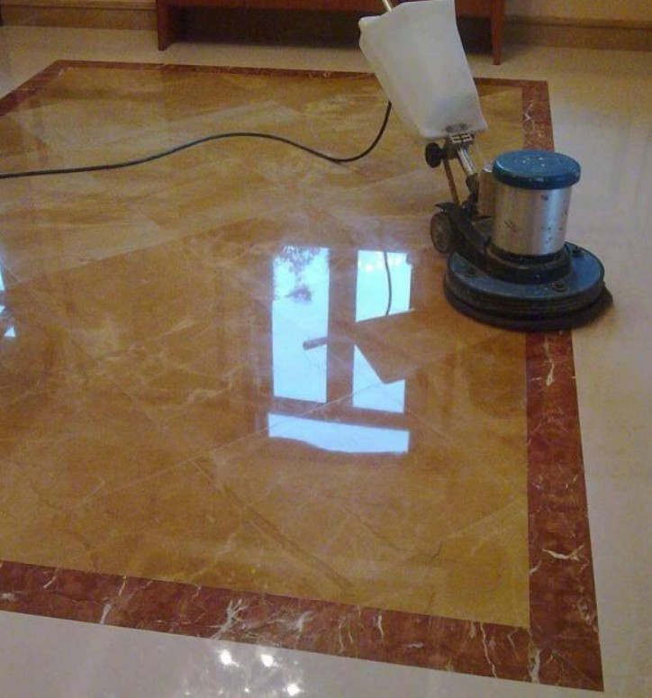

随着社会的进步，石材已经越来越被广泛的运用到石材装饰建筑中，同时，石材护理也是必不可少的一项，打蜡便是第一代的石材护理技术，直至今日也在广泛的运用。此技术依靠水溶性低分子塑料材料，在石材表面形成覆盖层保护底材。但是大家不知道的是石材表层硬度较低，易变色，需要每天抛光打蜡，耗费巨资，也严重伤害了石材表面，而高溶剂碱性的起蜡水更渗入石材形成龟裂。而石材晶面处理是利用物(理)化(学)原理，采用专业石材养护机械配合结晶材料，先对石材进行物理加温，从而使石材与结晶材料发生化学反应，以使在石材表面形成一种晶莹剔透的保护薄膜。
做晶面处理对石材有什么好处
高档次天然装饰材料，它的结构成分较为复杂，其需要定期进行必要的结晶养护才能保证应有的装饰效果，避免石材出现龟裂、表层脱落、失光、污染等病症现象，延长石材的使用寿命，否则石材的装饰效果会大打折扣，石材会出现一系列的病症现象。石材晶面处理，就相当于石材的美容修复，石材经过晶面硬处理后在其表面形成坚硬的结晶层，结晶层既提高了石材的光亮度，也有效地保护了石材不受磨损和污染。
石材晶面处理国家质量标准
-
①石面干净、整洁；保护完好，无损坏。
-
②整体石面手感细腻、油润、光亮、晶莹剔透。
-
③整体石面测光仪测试平均亮度大理石80度以上，花岗岩、石英石微晶石75度以上。
-
④整体石面呈现吸盘止滑效果。
-
⑤整体石面呈现荷叶效应，具防水效果。
石材晶面保养周期一般多少为好
-
①别墅因为人流量少，一般一季度一次为合适
-
②酒店、商厦等通道出入口每周两次。
-
③酒店、商厦大堂、电梯厅等公共区域每周一次。
石材结晶材料怎么选择
结晶效果的好坏主要取决于选用材料的配方，必须根据业主的要求选用不同的晶面材料：不能单独追求出光率，必须综合考虑结晶完毕石材透气性及石面结晶的亮度、清晰度、防滑度。
石材结晶加工要点
-
①浅色大理石（雅士白、爵士白、鱼肚白、大花白、斯拉夫白等）不能用酸性试剂做晶面。浅色石材含铁成分较高，与酸性试剂反应后容易引起石面发黄
-
②材质疏松的石材不可用含树脂成分比较高的结晶材料，否则，树脂腊封闭石面毛孔，不利于石材透气，容易导致石材返碱、发黄等病变。
-
③热带雨林、梦幻海南、法国金花等材质分布不均匀石材必须双重结晶，否则，因石面亮度不一致，石材结晶完毕会呈现石面手感平整视觉上不平整
-
④多孔松软石材（白砂米黄、木化石等）晶面处理前必须涂刷毛孔收缩水，然后再双重结晶，否则会呈现散光。
-
⑤花岗岩和微晶石等不可用钢丝棉抛光，否则，会因钢丝棉的粉末吸进石面毛孔日后发黄。
-
⑥深色花岗岩结晶处理前必须润色处理，否则，晶面完工，会呈现石面枯燥、不油润，整体石面发白。
影响石材晶面处理光泽度的8个要素
-
1、石材品种不同，结晶效果不同。
-
2、石材表面基础亮度不同，结晶效果不同。
-
3、石材表面钙化(大理石钙化、花岗岩硅化、抛光砖玻化)达到一定限度，石材表面结晶亮度下降程度不同。(需进行浅层翻新，才能提高结晶效果)
-
4、石材表面粉化、划痕多少，石材表面结晶亮度下降程度不同。
-
5、石材表面人流量的多少，石材表面结晶亮度下降程度不同。
-
6、室外环境情况干净与否，石材表面结晶亮度下降程度不同。
-
7、结晶后结晶层的耐老化性。
-
8、晶面剂(粉)品牌、品种不同，结晶效果不同。 由于石材晶面处理是一个日常保养维护的手段，因此，可以根据以上的经验来查找和判断，石材晶面处理后光泽度不高的问题，以便于在以后的保养维护中做到最佳效果。
上海五美是专业的上海保洁公司，提供写字楼保洁、大型综合商场保洁、工厂保洁、学校保洁、小区保洁、别墅区保洁、办公室保洁、大型游乐园保洁、开荒保洁、大理石翻新和养护、地毯清洗、水箱清洗、地面清洁、外墙清洗、物业管理、日常保洁外包等。欢迎广大新老客户前来咨询！
- 